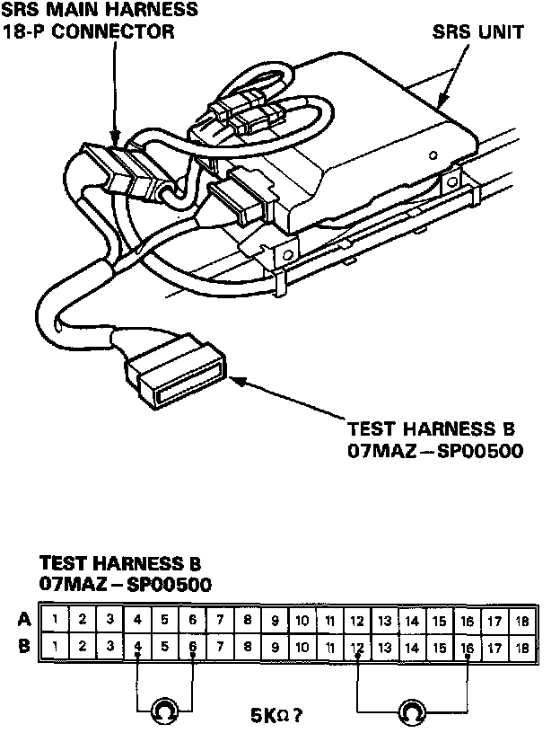
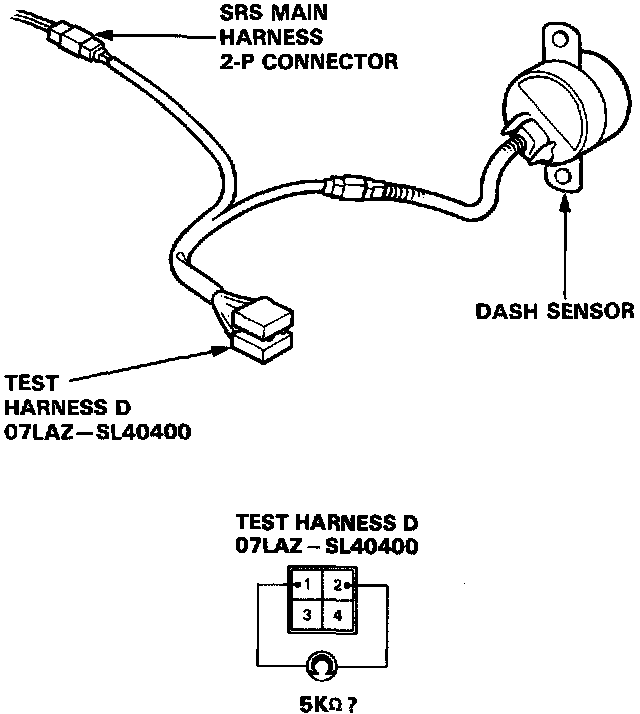

Mode C - Short in one Cowl Sensor or Open in Both Dash Sensors
MODE C: SHORT IN ONE COWL SENSOR, OR OPEN IN BOTH DASH SENSORS.
1. Before disconnecting any part of the SRS wire harness, Then install the short connectors.
2. Connect the Test Harness B (O7MAZ-SPOO5OO) between the SRS unit and the SRS main harness 18-P connector. Check the resistance between the left dash sensor terminals B12 and B16, and between the right dash sensor terminals B4 and B6.

- If resistance is more than 5 K Ohms, go to step 3.
- If resistance is less than 5 K Ohms, the SRS unit is faulty. Substitute a known-good SRS unit and recheck the voltages.
3. Connect Test Harness D (O7LAZ-SL40400) between the dash sensor and SRS main harness 2-P connector. Check the resistance between the No.1 terminal and No.2 terminal.

- If resistance is more than 5 K Ohms, the dash sensor is faulty. Replace it and recheck the voltages.
- If resistance is less than 5 K Ohms, the SRS main harness is faulty. Replace it and recheck the voltages.